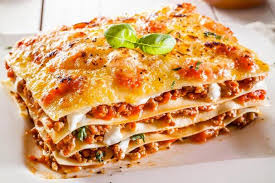

Лазанья
Лазанья — популярное блюдо итальянской кухни. Сейчас, практически во всех супермаркетах, можно купить листы для лазаньи. Продаются они в отделах с макаронными изделиями. Лазанья — блюдо хоть и очень вкусное, но очень сытное. Если у вас осталась готовая лазанья, ее можно заморозить. Из указанного количества ингредиентов получается 10–12 порций.
Ингридиенты:

200–250 г листов лазаньи
1 кг фарша
500 г помидоров
200 г лука
150 г моркови
3–4 зубчика чеснока
1 литр молока
100 г сливочного масла
100 г муки
300 г твердого сыра
50 г Пармезана
соль
перец
растительное масло
Приготовление
Лук мелко нарезать.
Чеснок мелко нарезать.
Морковь натереть на средней терке.
С помидоров снять кожицу, мякоть измельчить в блендере или натереть на терке.
Лук и чеснок обжарить на растительном масле.
Добавить морковь, обжарить.
Добавить фарш, посолить, поперчить, тушить до готовности (примерно 20–25 минут).
Добавить помидоры, потушить еще 5 минут.
Готовим соус «Бешамель».
Масло растопить.
Когда масло полностью растопится, добавить муку, хорошо перемешать.
Слегка обжарить.
Затем влить молоко, хорошо перемешать, довести до кипения.
Пока соус не станет по консистенции напоминать жидкую сметану.
Главное, следить, чтобы не образовались комочки.
Соус немного посолить, по вкусу можно добавить мускатный орех или чеснок.
Сыр натереть на средней терке.
Пармезан натереть на мелкой терке.
В форму для запекания выложить листы лазаньи.
На листы лазаньи выложить половину мясного соуса.
Затем выложить 1/3 соуса «Бешамель».
Посыпать половиной натертого сыра.
Накрыть листами лазаньи.
Выложить оставшийся мясной соус.
Смазать соусом «Бешамель».
Посыпать оставшимся сыром.
Снова выложить листы.
Смазать оставшимся соусом «Бешамель».
Поставить в духовку.
Запекать при температуре 180 градусов в течение 40–45 минут.
Готовую лазанью вынуть, посыпать Пармезаном (можно немного Пармезана отложить, чтобы посыпать им готовую лазанью), поставить в духовку еще на 5–10 минут.
К лазанье можно подать томатный соус: обжарить 100 г мелко нарезанного лука и 2 зубчика мелко нарезанного чеснока.
Добавить 300 г помидоров (очищенных от кожицы и мелко нарезанных), посолить, поперчить, тушить 5–10 минут.